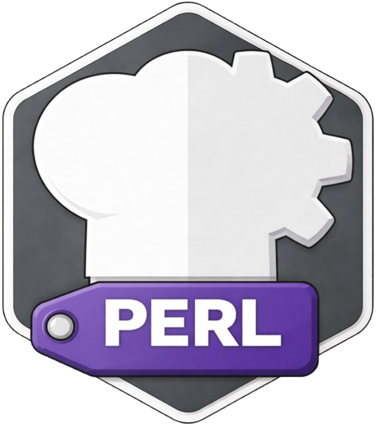

PROJECT

ZZX-LABS R&D // CYBERCHEFKIT
CyberChefPerl
Perl implementation companion for CyberChef primitives targeting legacy systems and Unix text-processing pipelines, with reference recipe execution, module/CLI generation, streaming filter examples, deterministic vectors, and portable packaging metadata.
PERL // UNIX TEXT PIPELINES
CyberChefPerl Workbench
REFERENCE ENGINEPERL CODEGENCLI / STDINTEST VECTORS
LEGACY / UNIX
Module and streaming CLI
Generated examples support normal arguments and STDIN-driven pipelines without depending on browser execution semantics.